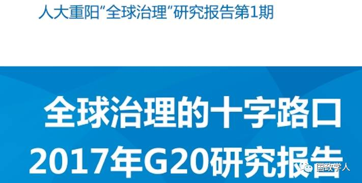
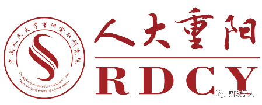
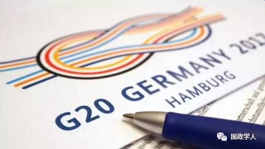
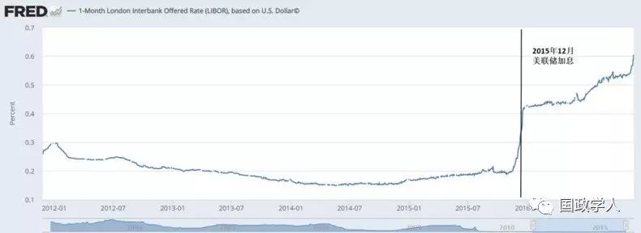
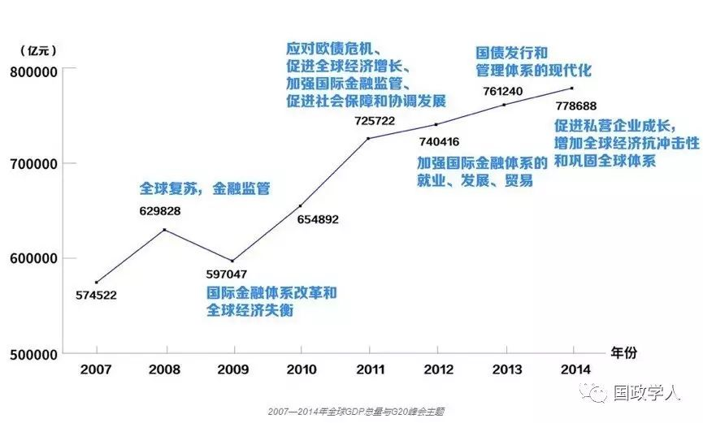
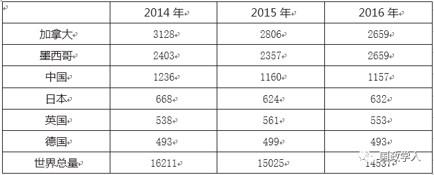
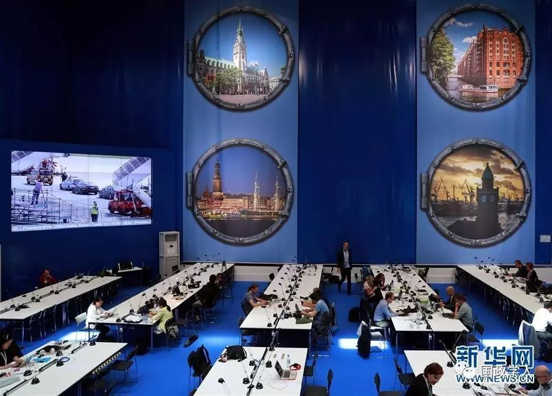

收录于合集


智库简介

中国人民大学重阳金融研究院（人大重阳）成立于2013年1月19日，是重阳集团董事长裘国根先生向母校捐款2亿元并设立教育基金运营的主要资助项目。
人大重阳是一所中国特色新型智库，现已拥有全职员工超过30人，聘请了来自10多个国家的96名前政要、银行家、知名学者为高级研究员，与近30个国家的智库开展合作关系。人大重阳旨在把脉金融，钻研学术，关注现实，建言国家，服务大众。目前，人大重阳被中国官方认定为G20智库峰会（T20）共同牵头智库、中国金融学会绿色金融专业委员会秘书处、“一带一路”中国智库合作联盟常务理事、中国- 伊朗官学共建“一带一路”中方牵头智库。2014年来，人大重阳连续三年被选入由美国宾夕法尼亚大学推出的、国际公认度最高的《全球智库报告》的“全球顶级智库150强”（仅七家中国智库连续入围）。
内容提要
“不确定”已成为2017年的新常态，这也标志着世界历史进入一个新的阶段。与此同时，肩负起为全球问题提供全球性解决方案的G20，也进入关键的转折之年：一是作为整体经济增长目标实现的关键之年，二是由危机应对到长期治理的加速转型之年，三是特朗普上台后，世界政治经济的不确定性加剧之年，四是全球化和全球治理面临“失序” 和“碎片化”加剧之年。五是G20主题议题在延承性和聚焦度上面临多元化的反思之年。在这样一个的关键节点上，G20面临着治理体系、机制和功能等多方面的风险。
从2016年杭州峰会“构建创新、活力、联动、包容的世界经济”到2017年汉堡峰会“塑造联动世界”，我们可以看到G20在联动发展、包容增长等方面始终是一脉相承，坚持以实现强劲、可持续、平衡增长为G20的重要议题。但在个别议题上，加入了主办国德国以及所在区域板块欧盟的一些当前关注的问题，如难民问题、气候变化、减少不平等方面的议题，多元化的议题内容也随着世界经济发展格局的变化在不断发生变化。
汉堡峰会核心议题的可持续性和聚焦度与中方期待有落差，会议架构难以维持杭州峰会的延续性和多元化的协同，成果预期难以超越杭州峰会。汉堡G20峰会将面临以下可能性：第一，峰会议题成果“被平庸”。第二，多边协调治理“被稀释”。第三，次级对话与全球机制“被交叉”。第四，意外事件可能“被焦点”。有些可能性对中国也会有利。比如，美国或遭孤立“被拉黑”。
以中国为代表的新兴市场国家将从五个方面推进G20的转型升级：一是推进国际货币治理改革，提高新兴市场国家抵御风险能力。二是创新增长方式，重点推进改革创新，开辟和抓住新机遇，提升世界经济增长潜力。三是完善全球经济金融治理，增强新兴市场国家和发展中国家的代表性和发言权，提高世界经济抗风险能力。四是构建开放型世界经济，开创全球化新境界。五是成为全球治理新时期的开拓者、贡献者和引领者。
当今世界上坚持时间最长的增长战略，应属中国的“五年规划”，共实施了60年。中国的发展成就很大程度上来自于几十年来一以贯之地以“五年规划”持续地谋发展。G20也需要有“五年规划”方法。
“一带一路”与G20两者在形式和内容上有所不同，但在理念和目标上有很多相通之处。“一带一路”主张建设开放型世界经济，落实2030 年可持续发展议程，解决全球发展不平衡问题，这与 G20 致力于加强全球经济治理的努力异曲同工。G20是统筹“一带一路”的最佳组织机构。

全球治理十字路口
**2017年G20研究报告
**
2017年是世界经济版图持续变化和全球增长动力大转型的重要时刻。世界经济低位徘徊，贸易与投资低迷。欧洲深受难民危机影响，大选年又遇政坛动荡。反全球化和贸易保护主义再次席卷全球，民粹主义甚嚣尘上。全球经济前景复杂化和不确定性日益凸显，焦躁与期待相夹杂，挑战与机遇并存。
5月25日刚结束的比利时布鲁塞尔北约峰会，美国与北约在军费分摊、经济贸易、反恐问题等方面暴露出一系列分歧与矛盾。5 月26日-27日意大利西西里岛陶尔米纳市七国集团（G7）峰会上，美国总统特朗普坚持“美国优先”政策导致美欧间分歧加剧，在应对气候变化问题上未达成共识。随后6月1日，美国总统特朗普在 白宫宣布美国将退出《巴黎协定》。德国默克尔总理就此公开表态， “双方能够完全信任对方的时代在一定程度上已经过去了”，更呼吁“欧洲人必须真正掌握自身命运”，不能依赖长期以来的英美盟友。
由此可见，作为“盟友俱乐部”的七国集团在可预见的未来，其作用将进一步减弱。而与此同时，占世界经济总量90% ，国际贸易80% ，涵盖全球三分之二人口，有中国、俄罗斯以及其他新兴国家参与的二十国集团（G20）将会取代七国集团发挥更大的作用，体现真正意义上的国际对话和多边合作平台。
在这样的大背景下，作为欧盟领头羊的德国从2016年12月接棒中国G20的轮值主席国身份，并将于2017年7月7日-8日在汉堡召开题为“塑造联动世界”的G20领导人第十二次峰会，能否在历史转折点正确把握世界经济走向，延续并落实历届峰会的各项成果，共同面对全球挑战，交出一份怎样的答卷，全世界都在拭目以待。
2017 年，也将是 G20 发展史上的一个重要节点，同时 G20 也面临着前所未有的挑战。能否实现整体的全球经济增长和可持续发展？能否在逆全球化大潮下，为新兴市场和发展中国家赢得更多的话语权？能否消除不平等，减少不公平，解决全球发展不平衡问题？结合2030年可持续发展议程、亚的斯亚贝巴行动计划和《巴黎协定》，G20与世界经济的未来之路应该怎么走，全球经济增长和可持续发展的新时代要如何开创？这些都是G20所必须面对的现实难题。G20各成员国需要紧紧抓住2017年这一关键的节点，推动建立一个更加具有包容性、凝聚力和执行力的综合协调体系。
推动G20实现从危机应对机制向长效治理机制转型，从侧重短期政策向短中长期政策并重转型，是2016年杭州峰会上中国为G20擘画的新发展图景。如何凝聚共识，推进合作，为实现强劲、可持续、平衡增长的目标而努力，将是G20必须积极作为的重要方向。我们坚信，这也是G20更好发挥作用的必经之路。作为发展中国家的领头羊，中国在后G20时代中将继续传承杭州峰会的宝贵财富，持续推动“创新、活力、联动、包容”的开放型世界经济发展。
随着美国进一步自我孤立，并逐步退出世界领导地位，中国的领导力就愈发凸显和值得期待 中国与欧洲及其他国家的战略合作机遇就更为有利。中国应该在G20平台上紧抓时代机遇，结合中国“一带一路”倡议深化合作，继续为全球发展添动力，为世界人民谋福祉。
一 、G20的转折之年与潜在风险
2016年，全球“黑天鹅”事件频发，世界局势进入动荡期，这一年的世界转变为2017年的前景蒙上一层阴影。“不确定”成为2017年的新常态，这也标志着世界历史进入一个新的阶段。与此同 时，肩负起为全球问题提供全球性解决方案的G20，也进入关键的转折之年：一是作为整体经济增长目标实现的关键之年，二是由危机应对到长期治理的加速转型之年，三是特朗普上台后，世界政治经济的不确定性加剧之年，四是全球化和全球治理面临“失序”和“碎片化”加剧之年。五是G20主题议题在延承性和聚焦度上面临着多元化的反思之年。在这样一个的关键节点上，G20面临治理体系、机制和功能等多方面的风险。
1. 整体经济目标实现的关键之年
如何带领全球经济走出金融危机后持续多年的低增长泥潭，实现强劲、可持续和平衡增长是 G20 面临的首要课题。2014 年的G20 主席国澳大利亚推动确立了“到2018年前使G20 整体GDP额外增长2%以上”的G20共同目标，为了实现这一目标，各成员方都制定了各自的“综合增长战略”（Comprehensive Growth Strategy）。今年是实现2% 增长目标的关键之年，但国际货币基金组织（IM F）的报告认为，这一目标难以达成。G20为推动经济增长提出了促进基建投资、金融监管改革等计划，但报告指出 2014 年确定的政策中，完全执行的仅约 55% 。根据现状，预计 GDP 额外增长效果仅在1% 左右。
2016年是实现这一增长目标的关键之年，凸显了实现这一经济增长目标的紧迫性。尤其是G20的GDP 占到全球经济的90% 以上，其整体经济目标的实现，对于提振全球经济，解决就业等社会问题，有着非常重要的意义。而当下，面对这一目标的紧迫性，其风险主要来自三个方面。
一是G20各国经济和政治形势恶化对G20整体目标实现的冲击。

图1：美元libor走势
美元退潮对全球，尤其是西方未来的前景造成重大损伤。2020年全球企业债务规模将从 2016年中期的 51万亿美元增至 75万亿美元。可以说，美元加息导致 2016年起西方企业债市场将被迫在今后数年持续去杠杆化，从而形成“债务悬崖”。同时，英国脱欧为本国和欧盟的经济带来了极大的不确定性。这使得欧元区的致命弱点被放大，即没有统一的央行以及货币政策，而欧元区各国又各自拥有独立的财政政策，整个欧元区深陷债务泥潭。欧洲经济前景不容乐观。
亚洲方面，日本仍然蹒跚不前，安倍政府射出的“量化宽松”之箭没有挽救疲软的日本经济，在持续三年的大规模印钞举措未能推升通胀后，日本央行的现行框架将难以维持，因为大规模购债已经即将耗尽市场流动性。
因此，当前全球经济并未完全摆脱金融危机阴影，危机因素只是暂时得到控制，并未真正消失，甚至向更深层次发展。有些地区仍有爆发金融危机的风险，全球金融市场上有些危机因素仍很活跃，这将带来很多政策风险，时刻可能对G20进程带来影响。
二是G20整体治理能力的挑战，使得总体增长目标的实现面临诸多风险。2010年多伦多峰会以来，G20的首要任务被明确为推进 “强劲、可持续的平衡增长框架”。然而 2014年的有关进展实际上对G2O 落实这一个框架的能力提出了挑战。
2014年2月，在澳大利亚悉尼举行的G20财政部长与央行行长会议上，与会成员承诺，争取在未来五年内将G20整体国内生产总值（GDP）在现有预期轨道基础上提高至少 2% 。而在 4 月的 G20财政部长与央行行长华盛顿会议上，则要求G20各成员在当年9月提交各自的综合增长战略（ComprehensiveGrowth Strategies），并要求各方要确保在 11月的布里斯班 G20领导人峰会上正式提出各自的全面增长战略。
“加快增长2个百分点”与“综合增长战略”具有明确的数字目标和政策体系。然而，这种明确的目标实际上对G20的治理能力提出了巨大的挑战。“综合增长战略”业已要求各国提交了各自的中期增长路线图，其中存在的不足也显而易见：各成员方的关键政策承诺（Key Commitments）侧重点各有不同，没有关于相互协调的 说明，存在潜在的相互竞争或相互抵消问题，可能导致“零和博弈” 并造成对于全球经济的整体外溢效果为零甚至为负。
显然G20目前仅有各国财政与货币政策的协调，然而靠财政与货币政策协调无法实现“加快增长2个百分点”的目标。G20的治理能力目前仅限于对各国财政政策、货币政策、金融监管等事务的协调，但却设定了难度极高的全面增长目标。在缺乏国际统一的全面经济政策协同，并且没有一个综合财政、货币与产业在内理论框架指导情况下，G2O 提出的治理目标实现的可能性越来越小。
三是全球治理体系的功能危机。G20的治理能力很大程度上仍局限在区域治理水平，使二十国难以形成一个共同增长的大框架。 “加快增长2个百分点”目标的实现，除了要注重主要大国的经济贡献，更应该着重调动发展中国家的经济活力，实现均衡发展。
但G20议程中大多数为发达经济体关心的议题，而对发展中经济体以及新兴市场国家关心的基础设施投资、发展等议题着墨甚少。2016年 G20 杭州峰会上第一次将“发展”问题重点提出来，对发 展中国家有明显受惠。但G20成员国之间相互联系松散，缺乏治理能力所需基础架构，在实现“加快增长2个百分点”的目标上，难以形成联动均衡的协作框架。
当今全球治理中存在的一大悖论是：不同的国家集团都在讨论全球治理话题，然而却还没有形成一个高效的、能解决核心难题的全球治理体系。以2014年7月15日金砖国家首脑峰会发布的《福塔莱萨宣言》为例，其中表达了对G20各主要议程如全面增长战略、“加速增长2% ”目标及IM F改革的支持，也表达了对乌克兰、叙利亚、伊拉克地缘政治形势以及非洲多个国家局势的关注及建议。而在稍早2014年6月5日的G7布鲁塞尔峰会宣言中，我们也能见到类似的关切，并且在大部分条款当中立场并无实质性差别。然而，这两份关注话题相通、立场并不相左的声明，却显然不存在合二为一的可能。
由此可见，G20原本应能成为统合不同国家及国家间组织的利益诉求的最有效平台，但这个平台并没有被充分地打造和利用。相反，由于各方之间的猜忌隔阂，导致这个堪称具有全球治理体系潜力的机制陷入困境。
治理目标与治理手段之间的严重不匹配造成G20的治理能力缺乏，难以推进落实所承诺的目标。有效的治理离不开设计方、实施方、监督方与资金供给机制。从G20的现实来看，提供了很多治理目标设计，但实施方案通常付之阙如，监督机制与资金供给机制都缺乏常规手段，依赖临时方案。
对于全球治理而言，治理手段难以支撑治理目标，是有利于国际秩序中的“既得利益集团”而不利于新兴力量的局面。如果不能实现G7与新兴市场经济体的有效治理合作，全球治理框架将面临分裂的危险。
2. 由危机应对到长期治理的加速转型之年
G20机制建立的初衷，是为全球经济走出金融危机影响走向复苏，提供一个全球解决方案。当前金融危机议题不再紧迫，但世界形势依然复杂多变，问题重重，热点频现，不确定不稳定因素增多。这要求各成员国进一步团结起来，建立长效机制，在更广阔的领域中展开全球合作。
当前，G20正在发生两大转型。从危机应对机制向长效治理机制转型，从周期性政策向结构性改革转型。2016年在杭州举办的G20峰会则是从危机应对到长效治理转变的节点，开创了全球治理框架的新起点。杭州峰会核准了《二十国集团落实2030年可持续发展议程行动计划》，并重申了 G20 领导人峰会机制对实现2030年议程雄心的承诺。这表明，G20已由最初的危机应对机制，转而将重点放在2030年长远战略目标的实现上，这代表了G20向长效治理的关键转变。对于危机重重的2017年，能否巩固杭州峰会的成果，将G20的短期目标与长期战略相结合，以危机促进各成员国在更深层次、更广范围内的协调合作。
G20以现有的治理体系需面对以下风险：
首先，G20框架下的长效体系仍未完全建立。从全球治理的需要来看，G20应该成为长效体系，但G20目前的框架只是临时体系，仍体现出强烈“临时性磋商机制”性质：欠缺实体化、约束性、执行力。G20诞生之初是临时召集的会议，此后，2009年在美国匹兹堡举行的第三次G20领导人峰会上，关于G20机制作出了“我们希望二十国首脑峰会今后每年召开”的表述，但这一措辞明显不具有约束力。
2011年在法国戛纳举行的第六次G20领导人峰会上，做出了对2012-2015年的主席国以及2015后主席国产生机制的安排，这比2009年匹兹堡峰会有了更明确的长效性，但并未消除G20峰会的“临时”性质。2014年11月在澳大利亚布里斯班举行的第九次G20峰会，由于要产生2016年的主席国而显得至关重要。这是决定G20将朝着长效体系发展还是继续作为临时性机制的抉择关口。
G20作为一个治理体系应该包括哪些成员？实际上除了G7的邀请之外，并无明确标准。G20更像是一个“G7+12”（欧盟算在G7内）对话机制，G7内部关系紧密、治理体系完备，具有高度有效的治理能力，而G7之外成员方像是在各自与G7对话。与G7相比，G20成员间关系也不够密切。G7能够成为一个稳定的长效体系，除了制度原因外，文化因素也不容忽视，而G20相比G7，文化更加多元化， 更需要探寻在不同文化都珍视的价值基础上的共同价值观。
其次，没有建立一个长效的议题运行机制。在议题的延续性上，G20体系内缺乏一个持续机制，使各届峰会提出的重点议题的落实得到持续追踪。这使各项议题难以转化为切实有效的政策，凝聚各成员国共同的力量，为解决世界问题提供长效治理方案。

图2：2007~2014年全球GDP总量与G20峰会主题
这甚至导致个别重要的G20议题有被抛弃的风险。如在2016年G20杭州峰会期间，中美两国共同宣布完成《巴黎协定》国内程序，并将《巴黎协定》批准文书交存联合国。但特朗普却声称气候变化纯属骗局、誓要“取消”巴黎协议，并最终于2017年6月1日宣布美国将退出《巴黎协定》。此举全面推翻奥巴马政府过去8年在气候变化领域所做的努力，也对《巴黎协定》的普遍性构成致命伤害，增加其他国家的碳减排负担，重创国际气候合作信心。同时，特朗普政府计划加大石油生产，复兴“受到太久伤害”美国煤炭产业。重振化石燃料行业，这与当前全球能源生产纷纷转向清洁、可再生能源的方向截然相反。
由此可见，已取得全球共识并被G20引以为傲的气候变化成果在当前形势下有可能止步不前，或出现“往回倒”的风险。美国的全面放弃可能直接导致气候变化、能源使用等议题被冲击甚至被抛弃，主办国德国也是“进退两难”，《巴黎协定》则面临因跟风美国而导致停摆的更大危机。
同时，G20机制中缺乏平等的合作机制。究其源起，G20来自于七国集团（G7）的扩大化。在过去的十多年中，G20机制的出现，从双部长会升级到首脑峰会，并日益成为国际治理中的重要机制，本身是新兴国家崛起的产物。但在G20内部，以G7为代表的发达国家与其他发展中国家的合作，远不如七国内部的合作密切。甚至在某些时候，美国这样的大国出于自身利益，对G20共同议题提出反对，导致G20无法正常运作，这为G20的长效体系运行造成了巨大阻碍。如美国国会迟迟不批准IMF改革方案，这一方案的搁浅实际上使G20承诺的与国际金融机构改革相关的大部分后续改革都无法进行。这反映了在G20体系中，成员国之间的不平等地位。
各成员国在G20框架下“各自为政”的现象仍然十分严重，各国“综合增长战略”总的关键战略决策是为争夺（而非共享）增长要素而提出的。存在相互竞争的政策承诺即便得以落实，并带来某一成员方经济增长，这种增长也来自其他成员方的效率损失。对于G20共同的增长目标来说，这只能起到“相互拆台”效果。只有建立一个平等的合作机制，才能使包括发展中国家在内的各成员国议题充分得到尊重，为长远发展提供可持续的动力。
在决定G20未来发展方向之年，在什么基础上建立G20的长效机制成为一个重大问题。由于G7在这个问题可能与G20其他成员存在不同观点，共识难以达成，因此G20创建长效体系还需要通过更高的政治智慧和更持久的努力来解决。
3. 特朗普上台后，世界政治经济的不确定性加剧之年
2016年，英国脱欧、特朗普当选、意大利修宪公投被否等黑天鹅事件频发。2017年又适逢欧洲大选之年，使得世界前景更加复杂且严峻。特朗普奉行“美国优先”政策，在全世界掀起了反全球化和贸易保护主义的逆流。这与G20倡导的全球治理产生了极大冲突。特朗普在2017年1月28日与德国总理默克尔通电话时，接受其邀请并将出席G20汉堡峰会。这将是特朗普首次以美国总统身份出席全球经济治理首要论坛，但多方已经普遍担忧特朗普能否就多领域协调合作与各领导人展开持久的协商。更为忧虑的是，迄今为止G20所形成的共识很多都与特朗普政府的政策立场不太一致。
同时，在美国的反对下，今年3月召开的二十国集团（G20）财长和央行行长会议在联合公报中，删除了反对贸易保护主义的措辞，这是G20十年来首次没有明确支持开放与自由贸易。鉴于美国的世界第一大经济体地位，美政府的贸易保护主义政策将产生全球溢出效应，不仅阻碍贸易自由化进程，还可能引发新一轮全球贸易战。
一方面，美国作为全球金融监管的“风向标”，大幅放松金融监管会产生较强的外溢效应，或将增加再一次爆发金融危机的可能性。特朗普签署行政令对《多德- 弗兰克法案》进行追溯式改革，“去监管化”的行动引发多国不安。与此同时，美联储加息预期增加将对全球资本流向产生重大的影响。这对本身不良贷款率高、金融衍生品风险敞口过大、政府债务拖累等大多数欧洲银行提出严峻考验，一旦处理不当，将会爆发银行危机。因此，不排除系统性金融风险恐卷土重来，导致新的金融危机。
另一方面，美国的保护主义政策及惩罚性关税，或将引发全球贸易战，严重违背G20杭州峰会公报中“我们重申反对任何形式的贸易保护主义”的共识。特朗普上台后就一直对外宣称要采取“美国第一”的贸易政策，贸易保护主义的浓重气息给全球经济蒙上了一层阴影。同时，美国还要对世界贸易组织（WTO）的规则进行“美国式”的修改，新政府或将放弃G20一直在倡导的通过以WTO为核心、运转良好的多边贸易体系和构建开放型世界经济，严重阻碍贸易自由化和便利化，对全球经济和贸易格局产生颠覆性的影响。
可见，特朗普时代的美国孤立主义，并非要斩断全球利益链，而是为美国卸掉全球“责任”。美国原先是全球化的主要推动者，以承担全球“责任”的方式来实现本国利益，但美国以往承担的责任远远超出其国界，如今早已力不从心。通过卸掉全球“责任”，转向“美国优先”的孤立主义，特朗普时代的美国可能要求别的国家分担更多的全球义务和开支。
4. 全球化和全球治理面临“失序”和“碎片化”加剧之年
**
**
以美国为首的西方国家的反全球化情绪不断加重。这种情绪是内部矛盾加深以及全球化负面影响叠加效应的结果。全球工业链的劳动力分配和生产外包，再加上科技进步，导致制造业迁移到发展中国家（制造业构成实体经济的核心）。发达国家的中产阶级和下层阶级失去了工作或薪资下降，因此他们都是全球化中的“输家”。包括中国在内的崛起中的强国正让西方感到紧张。新兴经济体显示出了参与全球治理的更大兴趣和能力，而受到危机打击的西方正在衰落和退出世界舞台。因此西方评论人士提出，传统的全球化已走到终点。这对依赖对外经济的一部分发展中国家是一个严重打击，给世界经济发展带来了巨大的负面影响。

图3：世界主要国家对美国商品出口数据（单位：亿美元）
同时，在全球化进入动荡、曲折的新时期，全球治理体系明显落后于全球化和国际形势的变化。各种地缘矛盾以及经济冲出使各国之间的冲突大于“共赢”。从英国公投退出欧盟到美国大选出乎意料的结果，从意大利修宪公投失败到法国右翼政党“国民阵线” 在今年大选过关斩将，民粹主义思潮卷土重来，逆全球化来势凶猛，全球治理“失序”和“碎片化”如水漫金山、满目疮痍，现有以西方“自由民主思想”为柱石的“全球自由秩序”（Global Liberal Order）正在经历自西方工业革命以来最为严重的分崩离析和系统性危机，世界进入全球治理体系体制性改革与国际秩序转换和重塑新的历史时期。
G20是全球治理的重要平台，当前全球化与全球治理的危机为 G20的发展带来了挑战。以美国为首的西方国家，已经着手认真思考未来国际秩序的框架和实现路径。这些构想的核心是，在适当考虑新兴经济体利益的基础上，尽可能长期维持美国在国际体系和秩序中的主导地位，确保“美国世纪”继续存在，并在将来能平稳落地。这将继续扩大G20内部发达国家与新兴市场国家之间的差距，违背了G20的初衷。
2016年，对于地缘政治来说，也是危机重重的一年。美国在韩国部署萨德，直指东北亚地区安全局势，成为美国重返亚太计划的重磅武器，挑起了中美俄及朝鲜的多方博弈。朝鲜频繁进行导弹试射，半岛核危机再次爆发。朝鲜半岛局势成为牵制中、美、俄、韩、日等多国的危机中心。同时，特朗普一改竞选时的战略收缩计划，突袭叙利亚空军基地，首次直接参与到叙利亚局势中。又提出重启伊朗制裁，美国重返中东的野心已经显露，中东局势再次紧张。欧洲深陷难民危机与恐怖主义的威胁之中，加之多国迎来大选，极左极右思潮在社会中涌向，带来了巨大的不安定因素。可见，G20内部成员在安全问题上存在着许多矛盾点。地缘政治作为G20外部因素，是影响国与国关系最重要的要素，在这种背景下，当前G20内部关系进入了非常脆弱的时期。
**
**
在这样一个关键节点上，德国将能否在历史转折点正确把握世界经济走向，延续并落实G20杭州峰会的各项成果，共同面对挑战，面临着重重阻碍。德国以及欧盟深陷难民危机和恐怖主义威胁，如何应对难民问题是目前国内面临的主要议题。与此同时，随着美国再次直接插手中东战局，美朝关系陷入僵局，G20内部利益集团的分化和博弈，与当前的地缘政治经济结合在一起，多边协调与合作也面临很多现实挑战。汉堡峰会面临着“平庸化”以及多边治理和多边外交“被稀释”的风险 。如何在各成员国都面对各自国内问题的背景下，达成实质性、可持续性的协议，避免G20汉堡峰会流于清谈，是今年德国要思考的重要问题。
**
**
5.G20主题议题在延承性和聚焦度上面临多元化的反思之年
从2017年5月29-30日刚结束的以“全球解决方案”为主题的二十国集团（G20）智库峰会（Think 20, T20）的进展来看，T20自2016年12月启动会召开以来，紧紧围绕德国G20主席国提议的“韧性、可持续、责任”（Resilience、Sustainability、Responsibility）的主题框架，相应地共成立了12个工作小组，在相关牵头智库（co- chair）的组织下进行主题性研讨，共有超过300多位专家参与讨论和起草建议，最终形成76份政策建议（Policy Brief）。
所涉及的 12 个工作小组为：2030 议程、气候政策和金融、贸易与投资、G20与非洲、国际税收合作、全球不平等与社会凝聚力、被迫迁徙、数字化、金融韧性、消除饥饿和可持续农业、韧性与包容性增长、循环经济等。
在T20峰会闭幕式上，由德国发展研究所（DIE）所长Dirk Messner和基尔世界经济研究所（IFW）所长 DennisSnower两位德国T20联席主席向G20德国政府递交了一份T20建议报告，主要内容侧重在强调充分利用好G20全球经济治理的首要平台，构建新的全球愿景，并围绕数字化，建立稳定、可持续和韧性的世界经济，气候政策和金融，消除贫困、减少不平等与被迫迁徙人员的管理，以及2030年发展议程等五大方面共20条的可行性政策建议。
从2016年杭州峰会“构建创新、活力、联动、包容的世界经济”到2017年汉堡峰会“塑造联动世界”，我们可以看到G20在联动发展、包容增长等方面始终是一脉相承，坚持以实现强劲、可持续、平衡增长为G20的重要议题。但在个别议题上，加入了主办国德国以及所在区域板块欧盟的一些当前关注的问题，如难民问题、气候变化、减少不平等方面的议题，多元化的议题内容也随着世界经济发展格局的变化在不断发生变化。
2030 年可持续发展议程是2017年德国G20始终坚持，并以之为G20合作框架基础的原则。2017年G20重点强调在联合国领导作用下，坚持多边体系如世界贸易组织、多边开发行金融机构等作用，更新并落实2030年可持续发展议程，通过集体和自愿的国别行动，加快G20与2030议程结合的执行路线图以实现共同目标。
气候变化议题是此次德国G20最为关注的议题之一，虽然因世界第一经济强国、全球第二大温室气体排放国美国退出《巴黎协定》，给气候变化的国际合作带来巨大的冲击和动摇，但全球气候治理的进程不会逆转。而因美国一意孤行的决定而让一向在推动气候变化规则制定，谋求在气候变化议题上发挥领导作用的欧盟与中国走得更近，中国和欧盟的坚定表态让世界看到了新的希望。同时，与气候变化相关的金融问题，也是G20关注的重点之一。2017年G20继续强调多边开发银行要支持低碳增长、可持续性的基础设施建设。金融稳定理事会要规范与气候相关的金融风险的定义界定，并建立经验交流和发展路径的平台。鼓励在G20成员国建立转型主权财富基金，加大对气候保护投资的杠杆率，调整因低碳结构性改变对就业、教育和产业政策等带来的影响。
数字化经济这方面很好地延续了2016年杭州峰会上关于《二十国集团数字经济发展与合作倡议》。随着科技日新月异的进步和发展，经济增长与社会发展越来越与数字化、信息化联系在一起。
2016年G20强调落实更多更好和负担得起的网络准入、促进经济增长及信任和安全的信息流动，同时确保尊重隐私和个人数据保护、促进信息通信技术领域投资、支持创业和数字化转型、加强电子商务合作、提高数字包容性和支持中小微企业发展、加强网络攻击的安全性和金融支持、利用区块链技术潜能，并反思知识产权保护和执法，以及全球网络竞争法案在发展数字经济方面的作用。
难民问题、被迫流离失所和移民问题是2017年G20的重点讨论议题。不仅仅因为德国以及欧盟深陷难民危机，更为重要的是如何将难民与移民更好地融入到社会中来，在就业问题，尤其是融入国内劳动力市场，并在教育、技能培训、创业、性别平等、责任分担、社会安全等方面提出更多可行性的建议。在T20峰会期间，与难民问题相关的讨论在30多场的研讨中就占据了4-5场，可见其对于主办国德国及欧洲的紧迫性和重要性。
此外，非洲与G20的合作伙伴关系也是此次会议的重点。G20重申支持发展中国家特别是非洲和最不发达国家工业化。在整个转型过程中支持劳动人口，确保新工业革命惠及所有人，包括妇女、青年和弱势群体。强调开展合作，使预期的科技和工业转型带来的收益最大化，并减少其负面影响。加大基础设施融资、发展电子商务和数字经济，扩大国际贸易和投资，并要结合非洲各国自身的社会和政治因素，更好地满足当地非洲人民的诉求和需要。
另外，近年频发的恐怖主义对国际和平与安全构成严重挑战，民粹主义和保护主义也进一步蔓延，宗教和粮食安全等问题，都是影响全球经济、可持续增长与发展的重要因素。德国G20的各项议题也都有所涉及和研讨，并将最终在汉堡峰会的公报上有所体现。
德国2017年G20在主题议题上的讨论更加具有包容性、多元化，超越了G20原有重点关注经济增长的领域，更多地强调全球经济发展和政治体制应该更多地为人类共同的生存和发展的需求服务。同时，G20要坚持经济、社会和环境的可持续发展和包容性增长，建立新的全球秩序，强调共享规范和价值观，推动全球共存，尊重文化差异，并改善全球治理和全球机制的质量。在全球事务不断出现新挑战的情况下，积极汇聚全球智慧，寻求解决全球治理问题的建议和措施。、
二、2017年汉堡G20峰会的风险前瞻与政策建议
**
**
作为全球经济治理首要平台的G20机制，当前正在经受G7“被撕裂”、全球治理需求下降等考验。这将导致2017年 7月 7-8日举行德国汉堡G20峰会很难完全继承中国杭州峰会上倡导的一份公报和28份成果文件。作为2016年中国官方授权的智库峰会（T20）共同牵头智库，以及深度参与 2015年土耳其安塔利亚峰会、2017年德国峰会筹备工作的智库，中国人民大学重阳金融研究院G20课题组认为，需要重新调适G20预期，夯实“中国+”机制，从更长远的视角看待全球治理。
1. 杭州峰会哪些议题被延承，哪些被旁落？
**
**
2017年汉堡G20峰会以“ 塑造联动世界”（Shape an Interconnected World）为主题，围绕“确保稳定性、改善可持续性、承担责任“（Building Resilience, Improving Sustainability, Assuming Responsibility）三大议题展开，在杭州峰会上继续以2030年可持续发展议程、《巴黎协定》等为框架，推动建立一个更加具有包容性、凝聚力和执行力的综合协调体系。这与2016年杭州峰会“构建创新、活力、联动、包容的世界经济”主题有一定的关联度，即始终坚持可持续发展和包容性增长为G20使命，强调团结协作与共担责任。但除了对传统核心议题的关注，德国也提出一些针对G20发展的新举措，对中国有不同程度的影响。
第一，汉堡峰会核心议题的可持续性和聚焦度与中方期待有落差。这主要集中在以下三点上：
一是杭州峰会首要议题“创新增长方式”被旁落。杭州峰会核准了《G20创新增长蓝图》，制定了创新行动计划、新工业革命行动计划和数字经济发展与合作倡议，但在汉堡峰会相关议题中并未对创新及新工业革命有过多篇幅，德国重点强调数字经济对社会发展和经济增长的改变，并首次推出了数字化部长（Digital Minister）会议。创新作为经济长期增长的重要动力之一，尤其是德国工业4.0 在G20中的优势作用，并未在汉堡峰会中有所凸显，与中方期待明显不符。
二是杭州峰会“强劲的国际贸易和投资”、“推动包容和联动式发展”，尤其重视基础设施互联互通等议题，在汉堡峰会之前的关注度明显被东道国更关切的难民问题、反恐融资、气候变化和公共卫生等议题盖过。
三是杭州峰会“建设更加高效的全球经济金融治理”议题下，对于国际金融架构、抗风险的金融体系、国际税收合作、金融透明度和绿色投融资、反腐败、能源合作等议题在汉堡峰会的延续性则相对完整，但因美国对国际货币基金组织和世界银行份额改革的阻滞，对金融监管放松、美联储加息预期增加对全球资本流向的溢出效应，让汉堡峰会在这些议题的执行度上大打折扣。
第二，汉堡峰会的会议架构难以维持杭州峰会的延续性和多元化的协同。除了延续常规G20领导人峰会、协调人渠道与财金渠道外，相关的专业部长会议、工作组会议、配套活动等在汉堡峰会筹备过程中也有了不少变化和调整。
部长会议层面，汉堡峰会取消了杭州峰会前召开4场部长会议中的2场，即贸易、能源部长会议，而用数字化部长、外交部长、卫生部长（德国首创）等3场替代。由此可见，在当前全球贸易增长低迷、贸易保护主义盛行、美国退出《巴黎协定》的背景下，东道国德国并未有足够勇气和底气召开相应部长级别会议，并尝试破解贸易与能源难点。3月G20财长和央行行长会议在美国的反对下，删除了联合公报中反对贸易保护主义的措辞，这是G20十年来首次没有明确支持开放与自由贸易，这对于G20领导力、政策协调与市场信心都是很大的打击，也反映了德国在美国压力下心有余而力不足，甚至出现了议题和成果上的倒退、妥协。
工作组层面，从杭州峰会的11个工作组重组为汉堡峰会的12个，德国保留了国际金融架构工作组、绿色金融研究小组、增长框架工作组、发展工作组、反腐败工作组、能源工作组、贸易和投资工作组、就业工作组、数字经济工作组等9个组。新增卫生工作组与金融包容伙伴全球关系组，合并能源工作组与气候议题为“可持续发展工作组（能源和气候）”，展现了德国主办国对卫生医疗、公共健康、气候变化、金融合作等包容性增长方面的重视。但投资和基础设施工作组则被删减，2017年并未有专门的工作组继续跟进杭州峰会时强调的促进基础设施投资，以及《支持基础设施投资行动的联合愿景声明》。可见，贸易与投资作为经济增长的重要引擎都未能在汉堡峰会淋漓尽致地发挥，反而受到干扰和阻碍。
配套活动层面，德国延续中国工商峰会（B20）、民间社会峰会（C20）、劳动峰会（L20）、智库峰会（T20）、妇女峰会（W20）、青年峰会（Y20）等六大传统配套活动之外，新增了与科研人员的对话论坛即科学峰会（S20），这与德国本身关注科学研究，重视科技发展对社会进步的推动作用有关，但德国并未继承前两届主办国土耳其、中国所倡导的创新峰会（I20），积极性也缺乏。在德国之后，陆续接棒的阿根廷、印度等国的延续更是成问题。
第三，汉堡峰会成果预期难以超越杭州峰会。虽然G20主办国可以自主设置议程和成果预期，但G20自带“轮值”属性和论坛性质，决定过其松散特性和难以避免的议题膨胀趋势。而且，汉堡峰会前留给成果锁定的时间所剩不多，但关于气候变化、金融监管与政策协调、难民问题、保护主义、恐怖主义等诸多问题仍有众多分歧和不确定性，能否形成“汉堡共识”目前尚难定论，但可以肯定的是在目前这种地缘政治复杂化、各国更多关注国内事务、多边协调难以有效实现的前提下，对汉堡峰会公报成果和行动计划的期待也不会太高。
**
**
2、特朗普因素深度影响汉堡G20峰会
2017年因美国特朗普执政，已成为全球政治不确定性的“新常态”。加之欧洲深受难民危机和恐怖主义影响以及英、法与德三国均处于大选年的背景，汉堡G20峰会的前景很不明朗，将面临以下可能性：
第一，峰会议题成果“被平庸”。特朗普极有可能在退出《巴黎气候变化协定》后再有惊人之举，如坚持“美国优先”奉行贸易保护主义政策及惩罚性关税，重振化石燃料行业，主张移民限制令等。G20平台形成的倡议和行动计划都不具有强制约束力，取决于成员国资源落实和行动。只要一国反对，成果就可能流于“清谈馆”，被平庸甚至被抛弃。
第二，多边协调治理“被稀释”。特朗普明确表态要减少甚至撤出对全球多边治理机制的支持，包括联合国和世界贸易组织。美国彻底撤出可能性不大，但美国很可能不会继续当多哈回合谈判的领导者和推动者。贸易全球化将全面受阻。同时，G20内部利益集团的分化和博弈，与当前的地缘政治经济结合，多边协调与合作也面临很多现实挑战，国际合作和多边治理有“被稀释”的风险。
第三，次级对话与全球机制“被交叉”。G20平台内本身就有多个次级对话平台，如七国集团（G7）、金砖峰会（BRICS）、中等强国合作体（MIKTA）等。内部凝聚力是对G20主办国领导力的首要挑战。另外，随着“百日计划”临近，中美两国元首在汉堡峰会上的会面，将对G20的成果产生重大影响。
第四，意外事件可能“被焦点”。2015年G20安塔利亚峰会遭遇巴黎爆炸恐怖袭击影响，峰会焦点转移到反恐，土耳其准备的难民问题和发展议题的焦点被取代。今年汉堡峰会也面临着地缘政治风险和冲突升级、恐怖主义和不可预测的意外事件等不确定性，尤其近期中东问题、朝核问题、伊朗土耳其等热点频频，每一个都有可能被引爆而造成难以想象的后果。
有些可能性对中国也会有利。比如，美国或遭孤立“被拉黑”。美国在G7与北约峰会的姿态引发各传统盟友不满，其反全球化的孤立主义、一直以来的霸权主义也遭到新兴市场国家的指责。退出《巴黎协定》一举让欧盟与中国走得更近。汉堡峰会上亦有可能出现美国遭到围攻和被孤立，中国及其他发展中国家可在一定程度上增强在G20的发言权和代表性。

2017年7月6日德国汉堡G20领导人峰会国际新闻中心一景。二十国集团领导人第十二次峰会定于7日至8日在德国北部港口城市汉堡举行。
-未完待续-
筛选：鑫辰
编辑：敖遊
声 明
国政学人微信公众平台系非盈利学术平台。建立初衷是方便广大学人进行学术研究，促进学术的传播和交流，不做任何商业用途。如有任何权利问题，请直接与我们联系。
您可能还会喜欢：
期刊分享 |
国际关系相关专业所有核心期刊免费获取（最新pdf版）